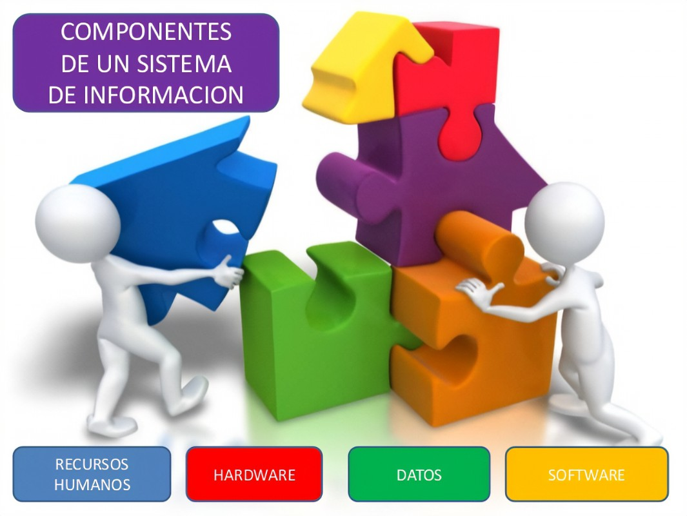
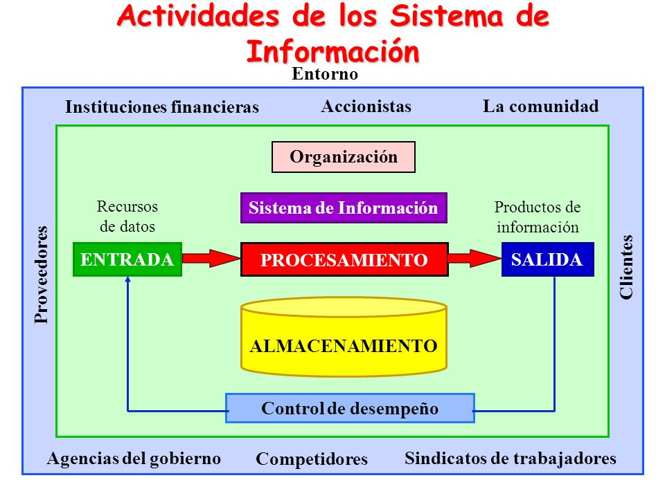
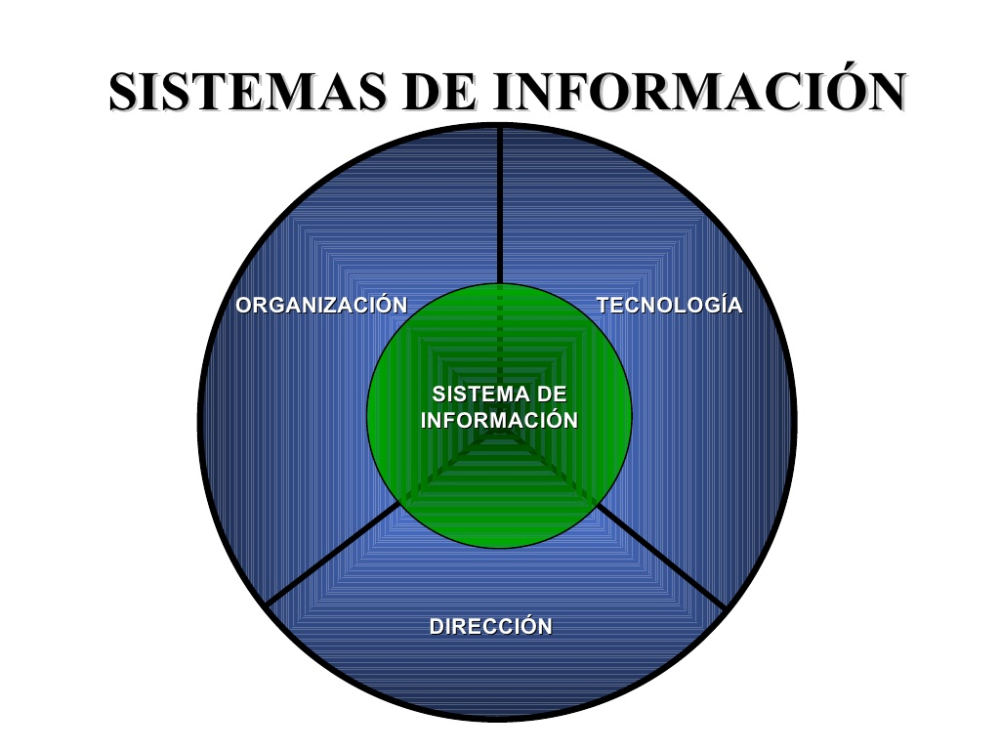

Un sistema de información es un conjunto ordenado de personas, procesos y herramientas cuyo fin es administrar datos e información, de manera que puedan ser recuperados y procesados fácil y rápidamente.
Todo sistema de información se compone de una serie de recursos interconectados y en interacción, bien organizados y dispuestos del modo mas conveniente en relación con un prop sito informativo determinado, que puede ser recabar información personal, procesar estadisticas, organizar archivos, entre otros.
Los sistemas de información pueden presentar diferencias, pero generalmente recolectan y clasifican datos, que son procesados por personas y/o con recursos informaticos, para que sean f ciles de comprender y recuperar. Asi, esta informacion queda almacenada para ser consultada de manera sencilla o para ser divulgada cuando sea necesario.
Estos sistemas se emplean en organizaciones empresariales y gubernamentales, pero tambien en otros sitios o estructuras, como bibliotecas, universidades, museos, redes sociales o aplicaciones.
Un sistema de informaci n presenta las siguientes caracter sticas:
- Tiene una organizacion determinada: Esta organizado de forma tal que funciona correctamente para que la informacion este bien clasificada y sea simple de comprender.
- Est conformado por elementos informaticos y no informaticos: Incluye computadoras, programas, aplicaciones y otros elementos tecnol gicos, pero tambi n est compuesto por personas y procedimientos que garantizan su funcionamiento.
- Debe ser seguro: Tiene que contar con herramientas tecnologicas que protejan la informaci n, para que solo determinadas personas puedan consultarla y para que no se pierdan datos.
- Debe poder ser actualizado: Tiene que ser lo suficientemente versatil para poder recolectar nuevos datos y transformarlos en informacion til. Adem s, debe poder adaptarse a nuevas tecnologias.
- Se emplea con distintos objetivos: Sirve para almacenar informaci n que se utiliza para tomar decisiones, recolectar datos de clientes, dirigir las actividades de una organizaci n, implementar cambios, realizar planificaciones, entre otros fines.
Elementos del sistema de informaci n:
Por lo general, se considera que todos los sistemas de informaci n contienen una serie de componentes o elementos:
- Equipos. Son todos los elementos tecnol gicos físicos o virtuales, como el hardware, el software, la red y las telecomunicaciones.
- Personas. Son todos los individuos que cumplen un rol en el sistema.
- Datos. Son todos los elementos relacionados con informaci n cualitativa o cuantitativa.

Actividades de un sistema de información:
Las actividades son los pasos necesarios para que un sistema de información está bien organizado. Estas son:
- Recopilación: Consiste en reunir los datos relevantes para la organización. Por ejemplo, cuando se indica que tareas realiza cada empleado de una compa ia.
- Almacenamiento: Consiste en guardar los datos recopilados, de forma tal que est n bien organizados y categorizados. Por ejemplo, se pueden clasificar las tareas de cada empleado de una compa ia segun el departamento al que pertenece o la etapa del proceso productivo.
- Procesamiento: Consiste en analizar los datos para generar informacion util, significativa y f cil de comprender. Por ejemplo, se pueden realizar graficos e informes sobre las tareas de cada empleado.
- Distribucion: Consiste en enviar la informaci n a las personas, reas, empresas u organismos que sean pertinentes. Por ejemplo, se pueden enviar los graficos y los informes a los directores de cada area.
- Retroalimentacion. Consiste en realizar una evaluaci n sobre las actividades anteriores. Por ejemplo, los directores de cada rea indican si hay informaci n faltante o que se debe corregir.

Como se desarrolla un sistema de informaci n?
Para desarrollar un sistema de informacion, se pueden seguir una serie de pasos:
- Definir el objetivo: Se determina que se quiere lograr con el sistema de informacion, es decir, para que se quiere aplicar y que informaci n se busca procesar.
- Analizar el sistema ideal: Se estudia c mo debe ser el sistema que sirva para alcanzar el objetivo. Se debe indicar cu les tienen que ser sus caracter sticas y qu impacto tendra en la organizacion.
- Proyectar y dise ar el sistema. Se determinan los elementos que debe incluir el sistema y se establece c mo debe funcionar. Por ejemplo, se puede decidir que tipos de computadoras y programas se utilizaran y como estaran conectados.
- Instalar el sistema: Se adquieren los elementos fisicos y digitales. Ademas, personas especializadas deben realizar todos los cambios e instalaciones para que el sistema funcione correctamente.
- Probar el funcionamiento del sistema: Se corrobora que los equipos y los programas funcionen correctamente y que las personas puedan utilizarlos sin inconvenientes. Adem s, se verifica que se puedan recopilar datos y que, posteriormente, se los pueda transformar en informacion valida.
- Implementar el sistema. Se implementa el sistema en la organizacion. Para ello, es necesario realizar capacitaciones para que todos puedan utilizarlo correctamente.
- Realizar tareas de mantenimiento en el sistema. Se llevan a cabo tareas de mantenimiento con el objetivo de corregir los errores e implementar todos los cambios necesarios.

Ejemplos de un sistema de informaci n
Algunos ejemplos de sistemas de informaci n son:
- Los sistemas de control de calidad: Son sistemas en los que se pide una retroalimentaci n al cliente y se eval an los resultados estadisticamente para elaborar informes interpretables por la gerencia de una compa ia.
- Las bases de datos de una biblioteca. Son sistemas en los que esta contenido el grueso volumen de documentos de la biblioteca, como libros, revistas y tesis, para poder ubicar y recuperar cada uno lo mas rapida y precisamente posible.
- Las hojas de c lculo. Son sistemas en los que se ingresa informaci n en bruto y se la organiza de manera cuantificable para obtener directrices de conducci n financiera.
| Nombre |
Descripción |
URL |
| Ed.lat |
Sistemas de Informaci n |
Visitar |
| Concepto |
Sistemas de informaci n |
Visitar |
| Enciclopedia Humanidades |
Sistema de informaci n |
Visitar |
Creada el 11 de mayo de 2024
por Maide Moreno.